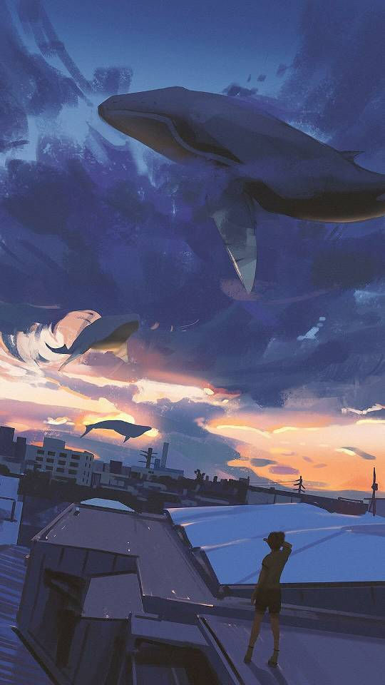

三月，对我来说是一个特殊的月份，特殊在:
- 转正通过，开始接手公司项目;
- 月底我将23岁，每当这个时候，我都会感到莫名其妙的沉默寡言。
上一周感觉过得很艰难，很充实，因为自己不会的很多，得一个个去补。
杨说叫我把B站上的20小时快速入门Go语言课程从新再系统学习一遍，虽然我觉得之前都接触过，但我还是欣然接受。现在课程已经过半，让我真正意识到，忘记自己曾经以为对的东西，推到重来，反而会有新的收获，也许这就是温故而知新吧。
这周很荣幸加入了Go语言中文网创始人创办的知识星球，与无闻，轩辕刃这些大佬一起学习Go语言，探究底层的本质。
技术文章我仍旧会继续坚持写下去，但我会逐渐摒弃数量，追求质量。
上周六和一位朋友去看漫展，然后去逛街，疯玩了一天，身心放松了下来，很是开心，让我忘却了工作上的烦恼。
我一直坚信，天将降大任于斯人也，必先苦其心智，饿其筋骨，劳其体肤…
加油!扛过去，胜利就在前方。
